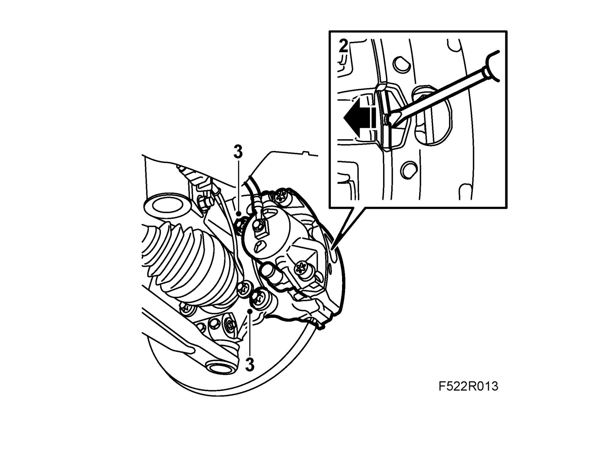
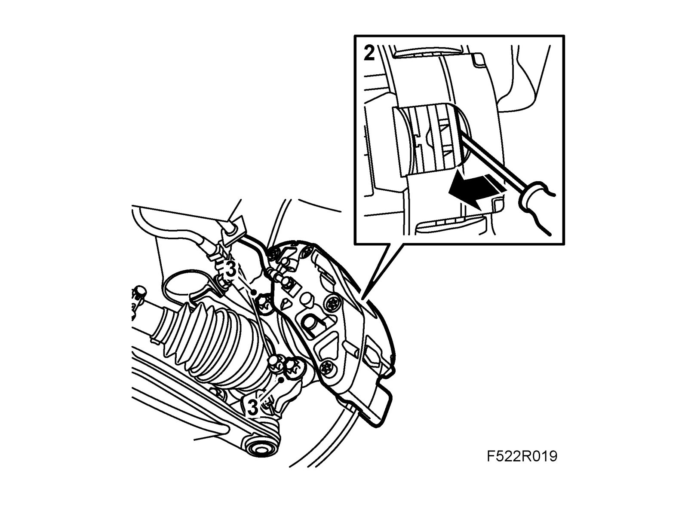
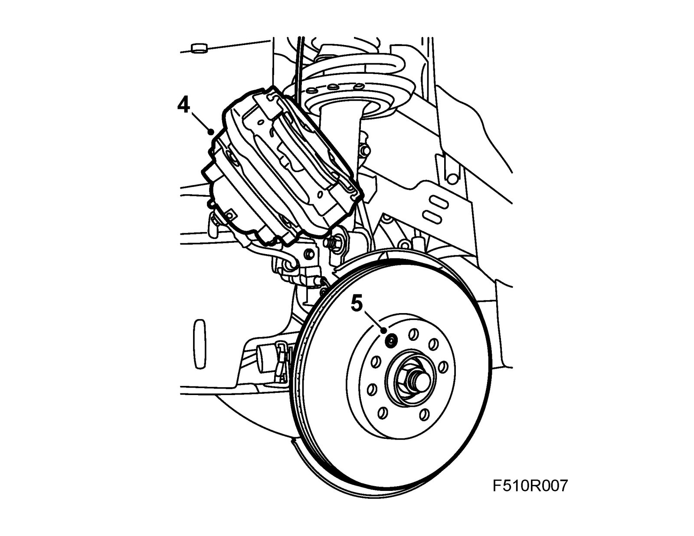
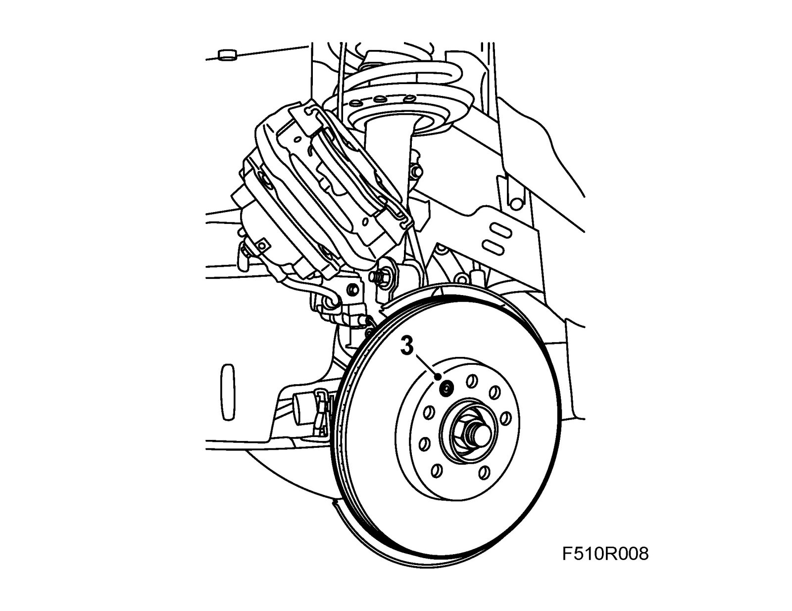
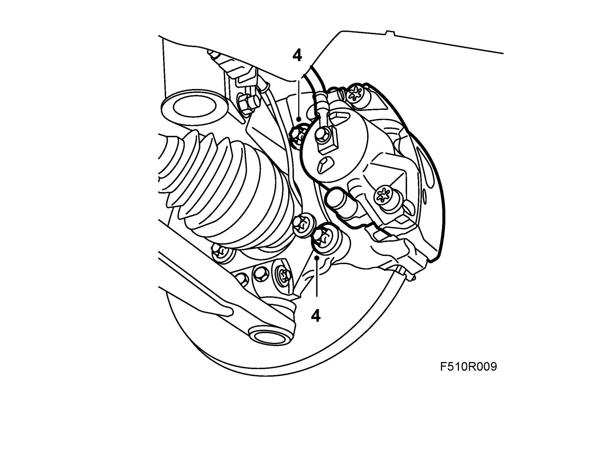

Front Brake Disc
Front brake discNote
Both brake discs should be changed at the same time to ensure good braking efficiency.
To remove
1. Raise the car and remove the wheel.
2. Press in the piston.
- Levels 1, 2 and 4: Press against the brake pad with a screwdriver.

- Level 3: Press between the brake disc and the brake caliper using a screwdriver.

3. Remove the two brake caliper retaining bolts.
Note
Make sure the cable to the wheel sensor is not damaged.
4. Suspend the brake caliper from the spring strut.

5. Remove the brake disc locking screw.
6. Lift off the brake disc.
To fit
1. Clean the new brake disc.
2. Clean all the contact surfaces between the hub and the brake disc.
3. Place the brake disc on the hub and screw in the brake disc locking screw.
Tightening torque 7 Nm (5 lbf ft)

4. Fit the brake caliper. Secure the bolts with 74 96 268 Thread locking adhesive.
Tightening torque: 210 Nm +30° (155 lbf ft +30°)

5. Fit the wheel.
6. Lower the car and press the brake pedal to press out the brake pads.
7. Test drive the car and check the operation of the brakes.